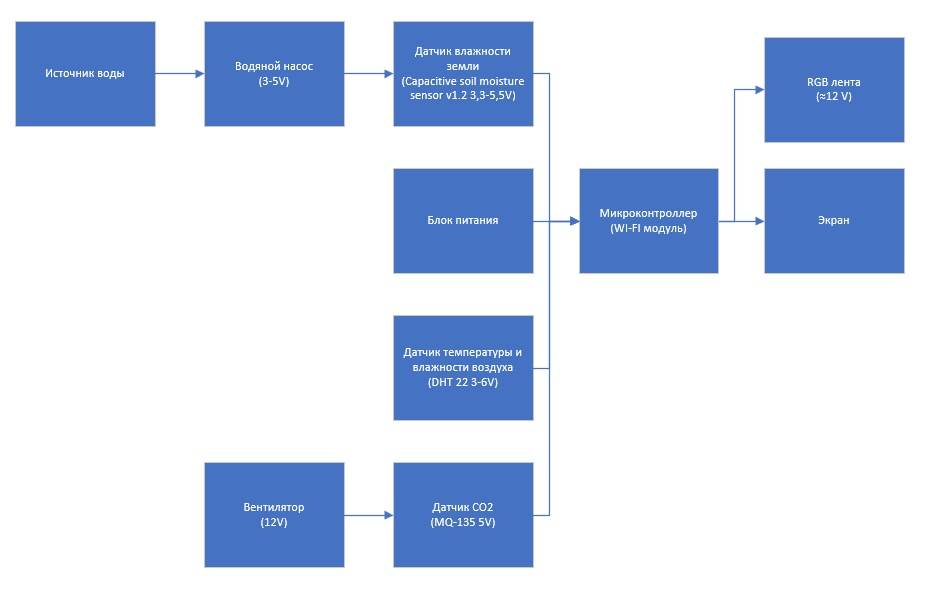

Описание проекта
Проект представляет собой аппаратно-программный комплекс для автоматизации теплиц. Система собирает данные о микроклимате и автоматически управляет исполнительными устройствами.
В рамках работы разработана печатная плата на базе микроконтроллера ESP32, написана прошивка на C++, а также создан удобный веб-интерфейс для удаленного мониторинга.
Функциональные возможности
- Мониторинг: Сбор данных с датчиков температуры, влажности почвы и освещенности.
- Автоматизация: Реализовано управление насосом полива и светодиодным освещением.
- Телеметрия: Настроена передача данных по Wi-Fi с отображением на веб-странице.
- Защита: Внедрено ограничение по времени работы насоса для предотвращения затопления.